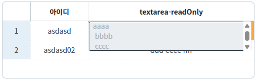
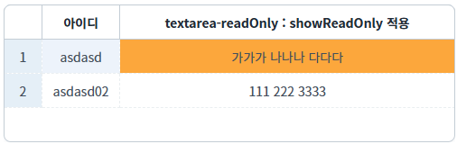
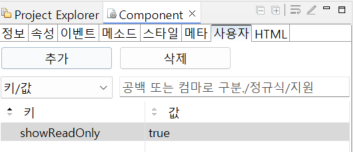

GridView의 사용자 탭에서 사용할 수 있는 'showReadOnly' 속성에 대한 예제입니다. - showReadOnly: readOnly인 textarea 셀을 더블 클릭했을 때 별도의 textarea가 표시되지 않도록 설정하는 속성입니다.
textarea-readOnly 컬럼 더블 클릭 시 편집창 표시 (기본 동작)
textarea-readOnly 컬럼 더블 클릭 시 편집창 표시 안 함 (showReadOnly="false" 설정 시)
예제 영역 'textarea-readOnly 컬럼 더블 클릭 시 편집창 표시 (기본 동작)'에 구성된 GridView에서 테스트합니다.1
STEP 1: 초기 상태를 확인합니다.
GridView에 연결된 DataList가 제대로 화면에 표시되어있는 것을 확인합니다. 데이터의 상태를 식별하기 위해 행 단위 숫자 표기 기능이 사용되었습니다.
(열 단위별 상태) - 1번째: 행의 번호를 표기 - 2번째: 아이디를 표기 - 3번째: 컬럼당 readOnly 속성이 적용된 상태
2
STEP 2: 실행된 결과를 확인합니다.
'textarea-readOnly' 열의 바디 컬럼을 더블클릭한다. 편집상태로 들어갈 수 있으나 readOnly 속성으로 인해 값 변경은 불가능
Image 1.브라우저(Chrome) 실행 예시

예제 영역 'textarea-readOnly 컬럼 더블 클릭 시 편집창 표시 안 함 (showReadOnly="false" 설정 시)'에 구성된 GridView에서 테스트합니다.1
STEP 1: 초기 상태를 확인합니다.
GridView에 연결된 DataList가 제대로 화면에 표시되어있는 것을 확인합니다. 데이터의 상태를 식별하기 위해 행 단위 숫자 표기 기능이 사용되었습니다.
(열 단위별 상태) - 1번째: 행의 번호를 표기 - 2번째: 아이디를 표기 - 3번째: 컬럼당 readOnly 속성이 적용된 상태
2
STEP 2: 실행된 결과를 확인합니다.
'textarea-readOnly : showReadOnly' 열의 바디 컬럼을 더블클릭한다. 편집상태로 들어갈 수 없는 것을 확인한다.
Image 2.브라우저(Chrome) 실행 예시

1
STEP 1: GridView의 열에 속성을 정의합니다.
[선택] readOnly="true"
(적용 우선 순위)
GridView < column < row < cell
(옵션 설명)
false : [default] 'readOnly'를 적용하지 않습니다.
true : 'readOnly'를 적용합니다.
2
STEP 2: GridView의 열에 사용자 속성을 정의합니다.
[옵션] showReadOnly="false"
readOnly 상태의 textarea 셀 더블클릭 시, 편집 팝업(textarea editor)을 표시하지 않습니다.
(옵션 설명)
- true : [default] readOnly 상태의 textarea 셀을 더블 클릭하면 편집용 팝업을 표시합니다.
- false : readOnly 상태의 textarea 셀을 더블 클릭해도 편집 창이 표시되지 않습니다.
Image 3.사용자 탭에서 추가 예시

readOnly
showReadOnly